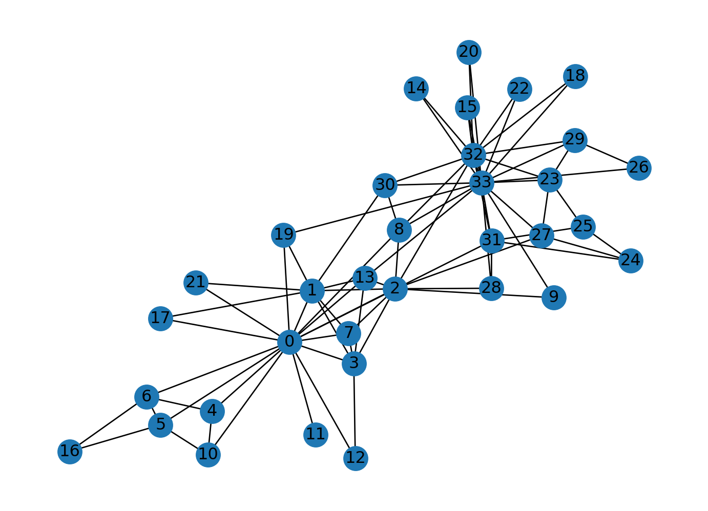
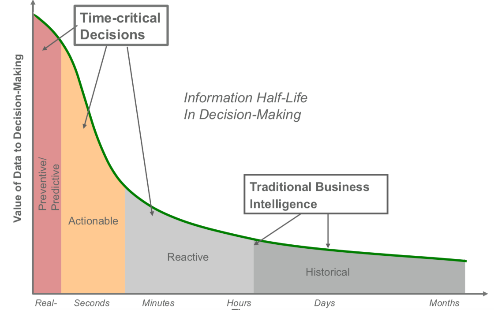
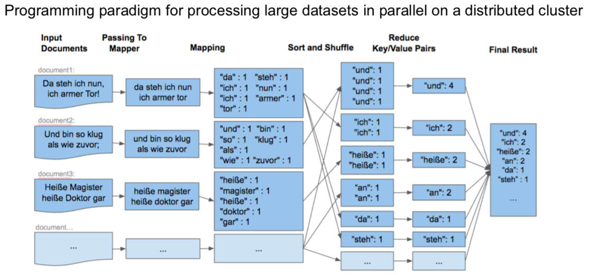
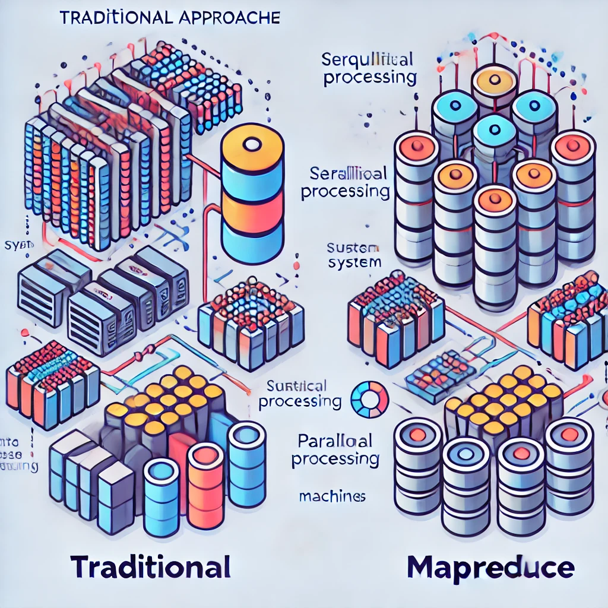
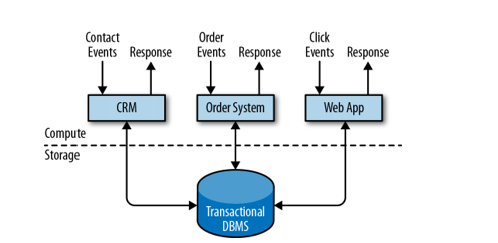
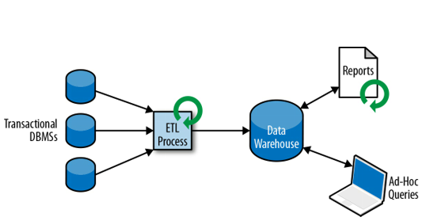

Code
import networkx as nx
G = nx.karate_club_graph()
nx.draw(G, with_labels=True)
⏳ Czas trwania: 1,5h 🎯 Cel wykładu
zrozumienie, jak dane ewoluowały w różnych branżach i jakie narzędzia są dziś wykorzystywane do ich analizy.
Na tym wykładzie przedstawimy ewolucję analizy danych, pokazując, jak zmieniały się technologie i podejścia do przetwarzania danych na przestrzeni lat. Rozpoczniemy od klasycznych struktur tabelarycznych, przez bardziej zaawansowane modele grafowe i tekstowe, aż po nowoczesne podejście do strumieniowego przetwarzania danych.
Początkowo dane były przechowywane w postaci tabel, gdzie każda tabela zawierała zorganizowane informacje w kolumnach i wierszach (np. bazy danych SQL).
Modele takie doskonale nadawały się do danych ustrukturyzowanych.
✅ Dane podzielone na kolumny o stałej strukturze.
✅ Możliwość stosowania operacji CRUD (Create, Read, Update, Delete).
✅ Ścisłe reguły spójności i normalizacji.
➡️ Systemy bankowe, e-commerce, ERP, systemy CRM.
import sqlite3
conn = sqlite3.connect(':memory:')
cursor = conn.cursor()
cursor.execute("CREATE TABLE users (id INTEGER PRIMARY KEY, name TEXT, age INTEGER)")
cursor.execute("INSERT INTO users (name, age) VALUES ('Alice', 30)")
cursor.execute("SELECT * FROM users")
print(cursor.fetchall())
conn.close()Wraz z rozwojem potrzeb biznesowych pojawiły się dane grafowe, w których relacje między obiektami są reprezentowane jako wierzchołki i krawędzie.
✅ Dane opisujące relacje i powiązania.
✅ Elastyczna struktura (grafy zamiast tabel).
✅ Możliwość analizy połączeń (np. algorytmy PageRank, centralność).
➡️ Sieci społecznościowe (Facebook, LinkedIn), wyszukiwarki (Google), systemy rekomendacji (Netflix, Amazon).
Dane te nie są w pełni ustrukturyzowane jak w bazach SQL, ale mają pewien schemat.
✅ Hierarchiczna struktura (np. klucz-wartość, obiekty zagnieżdżone).
✅ Brak ścisłego schematu (możliwość dodawania nowych pól).
✅ Popularność w systemach NoSQL i API.
➡️ Dokumenty w MongoDB, pliki konfiguracyjne, REST API, pliki logów.
{'name': 'Alice', 'age': 30, 'city': 'New York'}Tekst stał się kluczowym źródłem informacji, szczególnie w analizie opinii, chatbotach czy wyszukiwarkach.
✅ Nieustrukturyzowane dane wymagające przekształcenia.
✅ Stosowanie embeddingów (np. Word2Vec, BERT, GPT).
✅ Duże zastosowanie w analizie sentymentu i chatbotach.
➡️ Media społecznościowe, e-maile, chatboty, tłumaczenie maszynowe.
[-1.6764535903930664, 3.037797689437866, -6.599167823791504, -1.7495818138122559]Nowoczesne systemy analizy danych wykorzystują również obrazy i dźwięk.
✅ Wymagają dużej mocy obliczeniowej (sztuczna inteligencja, deep learning).
✅ Przetwarzane przez modele CNN (obrazy) i RNN/Transformers (dźwięk).
➡️ Rozpoznawanie twarzy, analiza mowy, biometria, analiza treści wideo.
Obecnie najbardziej dynamicznie rozwija się analiza danych strumieniowych, gdzie dane są analizowane na bieżąco, w miarę ich napływania.
✅ Przetwarzanie w czasie rzeczywistym.
✅ Wykorzystanie technologii takich jak Apache Kafka, Flink, Spark Streaming.
➡️ Transakcje bankowe (detekcja oszustw), analiza social media, IoT.
Processing transaction: {'id': 1, 'amount': 100}
Processing transaction: {'id': 2, 'amount': 200}Dane z czujników i urządzeń IoT są kolejnym krokiem w ewolucji.
✅ Często pochodzą z miliardów urządzeń (big data).
✅ Wymagają analizy brzegowej (edge computing).
➡️ Smart home, wearables, samochody autonomiczne, systemy przemysłowe.
Dane generowane są w postaci nieograniczonej - pojawiają się na skutek ciągłych działań systemów. W swoim telefonie wygenerowałeś dziś (a nawet na tych zajęciach!) wiele danych. Czy na następnych zajęciach lub też jutro nie będziesz ich generował?
Dane zawsze generowane są jako forma strumienia danych.
📌 Systemy obsługujące strumienie danych:
Firma to organizacja, która generuje i odpowiada na ciągły strumień danych.
W przetwarzaniu wsadowym źródłem (ale i wynikiem przetwarzania) danych jest plik.
Jest on zapisywany raz i można się do niego odwołać (może na nim działać wiele procesów - zadań).
Nazwa pliku to element identyfikujący zbiór rekordów.
W przypadku strumienia zdarzenie jest generowane tylko raz przez tzw. producenta (zwanego też nadawcą lub dostawcą). Powstałe zdarzenie przetwarzane może być przez wielu tzw. konsumentów (odbiorców). Zdarzenia strumieniowe grupowane są w tzw. tematy (ang. topics).
Kiedy podjąć decyzję biznesową ?

Kiedy mówimy o skalowalnym przetwarzaniu danych, pierwszym skojarzeniem może być Google.
Ale co tak naprawdę sprawia, że możemy wyszukiwać informacje w ułamku sekundy, przetwarzając petabajty danych?
👉 Czy wiesz, że nazwa “Google” pochodzi od słowa “Googol”, czyli liczby równej 10¹⁰⁰?
To więcej niż liczba atomów w znanym Wszechświecie! 🌌
Tradycyjne bazy danych SQL czy jednowątkowe algorytmy zawodzą, gdy skala danych przekracza pojedynczy komputer.
W tym miejscu pojawia się MapReduce – rewolucyjny model obliczeniowy stworzony przez Google.
✅ Google File System (GFS) – rozproszony system plików.
✅ Bigtable – system do przechowywania ogromnych ilości ustrukturyzowanych danych.
✅ MapReduce – algorytm podziału pracy na wiele maszyn.
Każde wejście dzielone jest na mniejsze części i przetwarzane równolegle.
🌍 Wyobraź sobie, że masz książkę telefoniczną i chcesz znaleźć wszystkie osoby o nazwisku “Nowak”.
➡️ Podziel książkę na fragmenty i daj każdemu do przeanalizowania jeden fragment.
Wszystkie częściowe wyniki są łączone w jedną, końcową odpowiedź.
🔄 Wszyscy uczniowie zgłaszają swoje wyniki, a jeden student zbiera i podsumowuje odpowiedź.
Załóżmy, że mamy miliony książek i chcemy policzyć, ile razy występuje każde słowo.
from multiprocessing import Pool
from collections import Counter
# Funkcja Map (podział tekstu na słowa)
def map_function(text):
words = text.split()
return Counter(words)
# Funkcja Reduce (sumowanie wyników)
def reduce_function(counters):
total_count = Counter()
for counter in counters:
total_count.update(counter)
return total_count
texts = [
"big data is amazing",
"data science and big data",
"big data is everywhere"
]
if __name__ == '__main__':
with Pool() as pool:
mapped_results = pool.map(map_function, texts)
final_result = reduce_function(mapped_results)
print(final_result)
# Counter({'data': 4, 'big': 3, 'is': 2, 'amazing': 1, 'science': 1, 'and': 1, 'everywhere': 1})✅ Każdy fragment tekstu jest przetwarzany niezależnie (map).
✅ Wyniki są zbierane i sumowane (reduce).
✅ Efekt: Możemy przetwarzać terabajty tekstu równolegle!

📊 Stare podejście – Jeden komputer wykonuje wszystko sekwencyjnie.
📊 Nowe podejście (MapReduce) – Każda maszyna liczy fragment i wyniki są agregowane.

🔹 Znajdź i uruchom swój własny algorytm MapReduce w dowolnym języku!
🔹 Czy potrafisz zaimplementować własny MapReduce do innego zadania? (np. analiza logów, zliczanie kliknięć na stronie)
Systemy Big data mogą być częścią (źródłem) dla hurtowni danych (np. Data Lake, Enterprise Data Hub)
Ale Hurtownie danych nie są systemami Big Data!
,,Big Data is like teenage sex: everyone talks about it, nobody really knows how to do it, everyone thinks everyone else is doing it, so every one claims they are doing it.’’ — Dan Ariely, Professor of Psychology and Behavioral Economics, Duke University
Celem obliczeń nie są liczby, lecz ich zrozumienie R.W. Hamming 1962.
Dane w biznesie przetwarzane są praktycznie od zawsze. W ciągu ostatnich dziesięcioleci ilość przetwarzanych danych systematycznie rośnie co wpływa na proces przygotowania i przetwarzania danych.
Większość danych przechowywana jest w bazach lub hurtowniach danych. Standardowo dostęp do danych sprowadza się najczęściej do realizacji zapytań poprzez aplikację.
Sposób wykorzystania i realizacji procesu dostępu do bazy danych nazywamy modelem przetwarzania. Najczęściej używane są dwie implementacje:
Model tradycyjny - przetwarzanie transakcyjne w trybie on-line, OLTP (on-line transaction processing). Świetnie sprawdza się w przypadku obsługi bieżącej np. obsługa klienta, rejestr zamówień, obsługa sprzedaży itp. Wykorzystywany w systemach Enterprise Resource Planning (ERP) Systems, Customer Relationship Management (CRM) software, and web-based applications.

Model ten dostarcza efektywnych rozwiązań m.in do:
Co w przypadku gdy mamy do czynienia z:
Badania nad tego typu zagadnieniami doprowadziły do sformułowania nowego modelu przetwarzania danych oraz nowego typu baz danych - Hurtownie Danych (Data warehouse).
Przetwarzanie analityczne on-line OLAP (on-line analytic processing).
Wspieranie procesów analizy i dostarczanie narzędzi umożliwiających analizę wielowymiarową (czas, miejsce, produkt).
Proces zrzucania danych z różnych systemów do jednej bazy nazywamy Extract-Transform-Load (ETL) (normalizacja i encoding and schema transaction).
Analiza danych z hurtowni to przede wszystkim obliczanie agregatów (podsumowań) dotyczących wymiarów hurtowni. Proces ten jest całkowicie sterowany przez użytkownika.
Przykład
Załóżmy, że mamy dostęp do hurtowni danych gdzie przechowywane są informacje dotyczące sprzedaży produktów w supermarkecie. Jak przeanalizować zapytania:
Odpowiedzi na te pytania pozwalają określić wąskie gardła sprzedaży produktów przynoszących deficyt, zaplanować zapasy w magazynach czy porównać sprzedaż różnych grup w różnych oddziałach supermarketu.
W ramach Hurtowni Danych najczęściej wykonuje się dwa rodzaje zapytań(oba w trybie batchowym): 1. Wykonywane okresowo w czasie zapytania raportowe obliczające biznesowe statystyki 2. Wykonywane ad-hoc zapytania wspomagające krytyczne decyzje biznesowe.

Różnorodność danych (Variety) pozwala firmie budować pełny obraz klienta (Customer 360). Zdolność do łączenia sztywnych danych sprzedażowych (SQL) z luźnymi opiniami z mediów społecznościowych (NoSQL/NLP) pozwala odkrywać nisze rynkowe niewidoczne w tradycyjnych raportach. Skalowalność typu MapReduce gwarantuje, że koszty analityki nie wzrosną liniowo wraz z przyrostem danych, co jest kluczowe dla rentowności projektów Big Data.